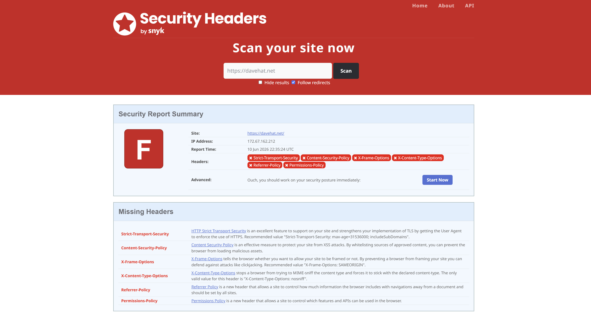
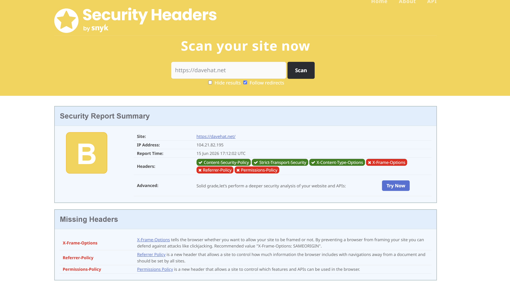
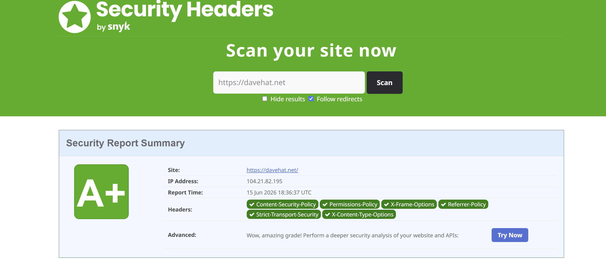

Red Team Reconnaissance & Blue Team Defense
There are ways of gathering information about a website's security posture. Using a third-party tool to analyze my organization's HTTP response gave me an understanding of how my website uses HTTP security headers to protect the visitor.

Missing Security Headers: DaveHat is missing several defensive headers such as Strict-Transport-Security, Content-Security-Policy, and X-Frame-Options. These are not necessarily vulnerabilities but they indicate that the administrator is not yet familiar with security hardening techniques.
Below showcases what the Strict-Transport-Security header is supposed to look like. This shows that it should be included
Strict-Transport-Security: max-age=31536000; includeSubDomains; preloadImplementation: Set the HTTP Strict-Transport-Security header values through cloudflare's dashboard on which my domain name is purchased from.
Including the Content-Security-Policy in the HTTP response headers allow the website administrator to control resources the user is allowed to load on the website!
This reduces the risk of cross-site scripting attacks because the resources that can be loaded is defined by the server. Not restricting resources leaves DaveHat.net highly vulnerable to client-side attacks and content manipulation.
Implementation: Created a transform rule within the cloudflare dashboard that modifies the response header to include CSP for every time an SSL/HTTPS request is made.
Content-Security-Policy: default-src 'self'; img-src 'self' https://davehat.net; style-src 'self' 'unsafe-inline';Here is the grade we receive from security headers after taking care of two things.

Setting the X-Frame-Options header to the value of "SAMEORIGIN" tells the website that you do not want your website to be framed. Preventing a website from framing helps defend against clickjacking attacks.
Implementation: Follows the same format as 2.2 Content-Security-Policy where I create a transform rule within the cloudflare dashboard that appends the response headers with the X-Frame-Options value.
The headers Referrer-Policy and Permissions-Policy are the remaining ones on the list that have yet to be mitigated.
Implementation:
Referrer-Policy: strict-origin-when-cross-origin
Permissions-Policy: geolocation=(), camera=(), microphone=(), payment=()
Here is the grade we receive from security headers after checking all boxes.

No single security header can prevent all web application attacks. Implementing this comprehensive set of security headers will significantly reduce the attack surface and enhance the security of the application.
Using the cloudflare dashboard on which this domain name is hosted from, requires me to manually set the Strict-Transport-Security headers and create the Content-Security-Policy, X-Frame-Options, and additional headers. This proves that configuration management is a necessary process when developing new technology to your organization's infrastructure.